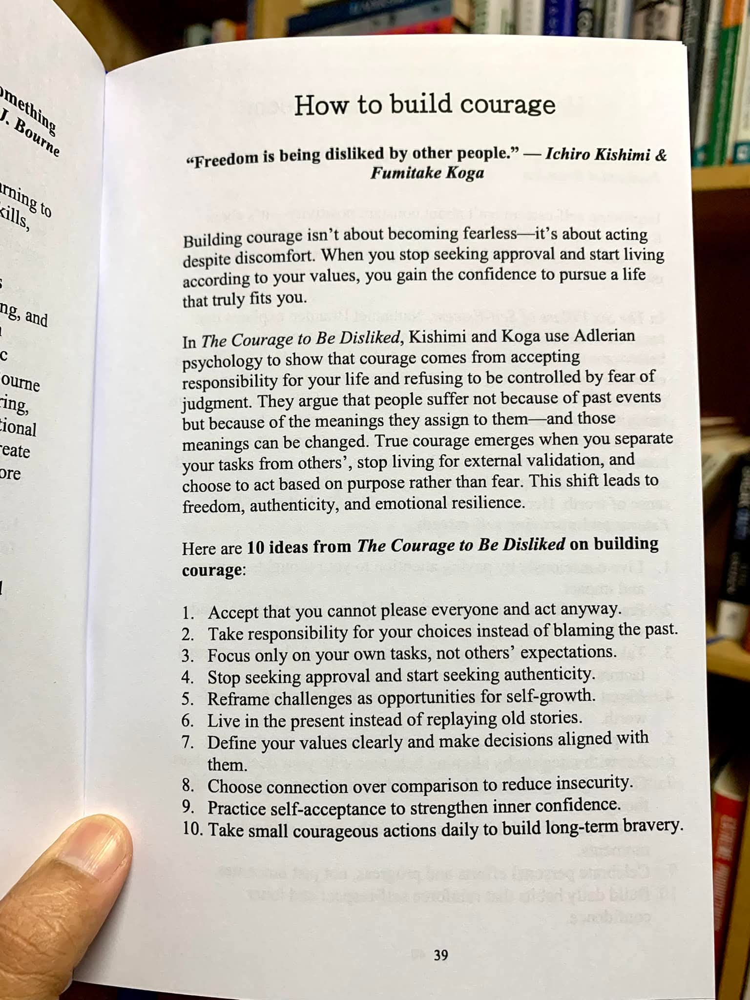

"Kebebasan adalah ketika kita berani untuk tidak disukai oleh orang lain." — Ichiro Kishimi & Fumitake Koga
Aroma kopi arabika dan sisa hujan sore hari mengapung tipis di udara Dago Atas. Di sudut sebuah kedai berdesain minimalis yang menghadap kerlip lampu kota Bandung, empat pasang mata menatap lekat ke arah lembaran kertas bagan alir dan laptop yang menampilkan baris-baris kode optimasi numerik. Mereka adalah potret intelektual muda Teknik Industri: cerdas, rasional, namun sering kali menyimpan badai eksistensial di balik kalkulasi matematis mereka.
Iman, yang malam itu lebih akrab disapa Esan oleh lingkaran terdekatnya, menggeser cangkir kopinya yang mulai mendingin. Sebagai mahasiswa tingkat akhir yang menghabiskan hari-harinya bergelut dengan sistem stokastik dan pemodelan ekonomi makro Indonesia, malam ini pikirannya justru terbelah. Di hadapannya duduk Tessa, mahasiswi berprestasi utama yang terkenal dengan analisis rantai pasoknya yang tak pernah melesat satu persen pun dari target efisiensi. Di sisi kiri, Fahri sibuk menyeka kacamata tebalnya setelah berjam-jam menganalisis data volatilitas pasar finansial, sementara Barceu, sang pragmatis kelompok, sibuk mencorat-coret margin buku catatannya dengan analisis tata letak pabrik.
Mereka berempat adalah inti dari kelompok diskusi yang di kampus sering dijuluki sebagai arsitek sistem. Namun, pertemuan malam ini bukan sekadar membahas proyek integrasi sistem tata kelola logistik atau proyeksi neraca perdagangan nasional. Ada beban tak kasatmata yang menggelayuti pundak masing-masing, sebuah beban psikologis yang malam itu menemukan katalisnya pada sebuah buku bersampul biru yang tergeletak di tengah meja: The Courage to Be Disliked.
Bagian I: Jerat Ekspektasi dan Determonisme Masa Lalu
“Sistem yang sempurna adalah ilusi,” ujar Esan memecah keheningan, suaranya berat namun tenang. “Dalam riset operasional, kita selalu berasumsi bahwa kita bisa mengendalikan semua variabel melalui fungsi kendala. Kita meminimalkan biaya, memaksimalkan keuntungan, seolah-olah hidup ini adalah persamaan linear yang deterministik. Tapi realitasnya? Kita sering kali mengorbankan kebebasan diri hanya untuk memenuhi fungsi tujuan yang ditentukan oleh orang lain.”
Tessa mendongak dari layar laptopnya. Pandangan matanya yang tajam mencerminkan ketegasan seorang pemikir sistemik. “Apa yang kamu maksud dengan fungsi tujuan luar, San? Bukankah tugas kita sebagai insinyur adalah melakukan optimasi di bawah batasan yang ada? Orang tua kita, dosen kita, struktur industri tempat kita akan mengabdi kelak—mereka menyediakan parameter tersebut. Kita hanya memastikan sistem berjalan tanpa friksi.”
“Itulah masalahnya, Tessa,” sahut Fahri sembari memakai kembali kacamatanya. “Kita memperlakukan diri kita seperti fungsi produksi linear. Jika inputnya adalah ekspektasi lingkungan, maka outputnya haruslah kesuksesan yang diakui secara sosial. Di dunia Forex, ketika aku menganalisis pergerakan EUR/USD menggunakan indikator Exponential Moving Average atau RSI, aku sadar bahwa pasar sering kali bergerak tidak rasional karena psikologi massa yang ketakutan. Sama seperti kita. Kita takut dinilai gagal oleh lingkungan. Kita menderita bukan karena apa yang terjadi pada kita di masa lalu, melainkan karena makna yang kita berikan pada masa lalu itu sendiri. Itu esensi psikologi Adlerian yang sedang kubaca akhir-akhir ini.”
Barceu memutar penanya, lalu mengetuk-ngetuk meja kayu. “Kalian berbicara terlalu teoretis. Mari kita bawa ke ranah yang lebih riil. Berapa banyak dari kita yang mengambil jurusan Teknik Industri ini karena benar-benar mencintainya, dan berapa banyak yang masuk ke sini hanya karena predikat bergengsi di kota Bandung? Kita dididik untuk berpikir terstruktur, untuk menyelesaikan masalah makro, mulai dari fluktuasi PDB hingga utang negara, tapi kita gagap saat harus menyelesaikan disonansi dalam diri kita sendiri.”
Esan tersenyum tipis. Kalimat Barceu menyentuh titik sensitif dalam rencana masa depannya. Dia teringat proyek analisis makroekonomi terbarunya, sebuah kajian mendalam mengenai kerentanan struktural ekonomi domestik di tengah ketidakpastian global. Dia membuka salah satu berkas di komputernya, menampilkan sebuah catatan ekonomi yang rumit.

“Lihat formulasi ini,” kata Esan sambil menunjuk ke baris persamaan di layar yang mencerminkan fungsi makroekonomi sederhana untuk keseimbangan pendapatan nasional di bawah volatilitas eksternal. “Jika kita memandang ekonomi suatu negara, kita mengenal formulasi standar pengeluaran agregat:”
“Di mana Y adalah Pendapatan Nasional, C adalah Konsumsi, I adalah Investasi, G adalah Pengeluaran Pemerintah, X adalah Ekspor, dan M adalah Impor. Dalam analisis yang kami susun baru-baru ini mengenai prospek ekonomi Indonesia, kami melihat bahwa variabel C atau konsumsi masyarakat sangat dipengaruhi oleh ekspektasi psikologis terhadap inflasi dan nilai tukar Rupiah. Ketika masyarakat merasa cemas, konsumsi menurun, dan seluruh output nasional bergeser ke arah kontraksi. Hal yang sama terjadi pada manusia. Ketika kita dipenuhi kecemasan akan masa depan atau bayang-bayang kegagalan masa lalu, fungsi utilitas hidup kita runtuh.”
Bagian II: Pemisahan Tugas (Separation of Tasks)
Tessa menarik napas dalam-dalam, lalu menyandarkan punggungnya pada kursi. Kalimat Esan memicu sesuatu dalam dirinya. Selama ini, dia selalu dikenal sebagai mahasiswi tanpa celah. Nilai akademisnya sempurna, presentasinya memukau para penguji, dan dia digadang-gadang akan langsung memimpin divisi operasional di sebuah perusahaan multinasional tak lama setelah lulus. Namun, tak ada yang tahu bahwa setiap malam dia menderita insomnia akut, dihantui oleh rasa takut bahwa suatu hari dia akan mengecewakan ekspektasi besar ayahnya.
“Buku biru di depanmu itu, San,” kata Tessa pelan, jarinya menunjuk ke arah buku The Courage to Be Disliked. “Kishimi dan Koga menulis tentang konsep Pemisahan Tugas. Mereka mengatakan bahwa hampir semua masalah hubungan interpersonal muncul karena kita mencampuri tugas orang lain, atau orang lain mencampuri tugas kita. Dalam konteks industri, ini seperti melanggar batas otorisasi dalam arsitektur sistem pengambil keputusan.”
“Tepat sekali,” potong Fahri dengan antusias. “Dalam manajemen rantai pasok modern, jika sebuah stasiun kerja mencampuri parameter kontrol stasiun kerja lain tanpa sinkronisasi melalui sistem informasi, yang terjadi adalah efek bullwhip. Informasi terdistorsi, inventori menumpuk, dan sistem menjadi tidak efisien. Di ranah personal, tugas kita adalah melakukan yang terbaik dalam keputusan kita sendiri. Bagaimana orang lain menilai keputusan itu—apakah mereka suka atau tidak suka, apakah mereka memuji atau mengkritik—itu bukan tugas kita. Itu adalah tugas mereka.”
Barceu mengerutkan kening. “Mudah diucapkan, Fahri. Tapi bayangkan jika Esan memutuskan untuk menolak tawaran posisi analis di Jakarta dan memilih untuk mengembangkan aplikasi manajemen catatan berbasis awan miliknya sendiri, nseNote, atau fokus pada analisis Forex-nya di Bandung. Orang-orang akan menganggapnya menyia-nyiakan latar belakang pendidikan Teknik Industrinya yang mumpuni. Apakah dia siap untuk dianggap aneh? Apakah dia siap untuk tidak disukai oleh lingkungan akademisnya?”
Esan memandang ke luar jendela, menembus kaca yang berembun menuju lampu-lampu kota Bandung yang berkedip laksana diagram pencar data acak. “Itulah esensi dari keberanian, Barceu. Membangun keberanian bukanlah tentang menghilangkan rasa takut sama sekali. Ini tentang mengambil tindakan yang selaras dengan nilai-nilai internal kita, meskipun ada kenyamanan yang harus dikorbankan. Ketika aku berhenti mencari persetujuan dari orang lain dan mulai hidup berdasarkan prinsip fungsionalitas yang sejati, aku mendapatkan kembali kendali atas hidupku.”
Dia kemudian mengambil selembar kertas bersih dan menuliskan sebuah matriks optimasi perilaku yang terinspirasi dari prinsip-prinsip Adlerian yang mereka diskusikan. Persamaan optimasi internal manusia dapat didefinisikan secara matematis melalui fungsi kepuasan batin beralur non-linear:
“Di mana,” Esan menjelaskan dengan presisi seorang insinyur, “U(x) adalah utilitas otentik dari tindakan kita, \Phi(x) adalah fungsi penalti yang timbul dari ketergantungan kita pada validasi eksternal, dan \lambda adalah koefisien kecemasan kita terhadap penilaian orang lain. Jika kita menetapkan \lambda o 0, artinya kita membebaskan diri dari ketakutan akan penilaian orang lain, maka tindakan kita akan sepenuhnya didorong oleh nilai-nilai intrinsik dan tujuan hidup yang sejati. Inilah yang disebut dengan kebebasan psikologis.”
Bagian III: Hidup di Masa Kini dan Mengubah Makna
Malam semakin larut, namun diskusi di kedai kopi Dago itu justru semakin tajam. Struktur berpikir Teknik Industri yang biasa mereka gunakan untuk membedah sistem manufaktur kini mereka gunakan untuk membedah jiwa mereka sendiri. Hubungan interpersonal, trauma masa lalu, dan ambisi masa depan dikuliti satu per satu dengan pisau analisis yang objektif.
“Aku sering kali terjebak dalam cerita-cerita lama,” aku Tessa jujur, suaranya terdengar lebih rapuh dari biasanya namun sarat akan kesadaran baru. “Setiap kali aku menghadapi kegagalan kecil dalam simulasi optimasi atau analisis kelayakan proyek, aku selalu mengaitkannya dengan masa kecilku, di mana setiap kesalahan berarti kemarahan. Aku mengira masa laluku adalah variabel laten yang secara permanen menentukan masa depanku.”
“Itu pandangan etiologi, Tessa. Pandangan yang mencari sebab-akibat di masa lalu,” sahut Esan dengan lembut. “Adler menawarkan pandangan teleologi: kita bertindak demi tujuan tertentu di masa kini, bukan karena dorongan masa lalu. Kamu menggunakan cerita masa kecilmu sebagai alasan untuk tidak berani mengambil risiko gagal di masa kini. Ketika kita mengubah makna yang kita sematkan pada masa lalu, kita seketika mengubah arah hidup kita di detik ini juga.”
Fahri mengangguk setuju. “Sama seperti dalam pemodelan data runtun waktu (time series analysis) untuk pergerakan mata uang global. Data masa lalu memberikan kita pola historis, tetapi keputusan transaksi dibentuk oleh kondisi volatilitas saat ini dan manajemen risiko pada detik ini juga. Kita tidak bisa mengubah data masa lalu, tetapi kita memegang kendali penuh atas posisi posisi pasar yang kita buka sekarang.”
Barceu memandang buku bersampul biru itu lagi, lalu membalik halamannya ke bab yang merangkum ide-ide utama tentang bagaimana membangun keberanian tersebut. Dia membacanya keras-keras agar suara bising mesin espresso di latar belakang tidak menenggelamkan makna kata-katanya.
10 Gagasan Utama Membangun Keberanian (The Courage to Be Disliked)
- Terima bahwa Anda tidak bisa menyenangkan semua orang, dan tetaplah melangkah dengan keyakinan penuh.
- Ambil tanggung jawab penuh atas pilihan-pilihan hidup Anda alih-alih menyalahkan masa lalu atau lingkungan.
- Fokuslah hanya pada tugas-tugas Anda sendiri, dan lepaskan ekspektasi serta penilaian orang lain.
- Berhentilah mencari pengakuan eksternal dan mulailah mengejar otentisitas diri yang sejati.
- Petakan kembali tantangan hidup sebagai peluang berharga untuk pertumbuhan dan pematangan diri.
- Hiduplah sepenuhnya di masa kini daripada terus memutar ulang narasi penal penyesalan masa lalu.
- Definisikan nilai-nilai fundamental Anda secara jelas dan ambil keputusan yang selaras dengan prinsip tersebut.
- Pilihlah koneksi yang tulus dan kolaboratif daripada perbandingan sosial yang memicu rasa tidak aman.
- Praktikkan penerimaan diri yang radikal untuk memperkokoh fondasi kepercayaan diri dari dalam.
- Ambil tindakan-tindakan keberanian kecil setiap hari untuk membentuk keberanian jangka panjang yang kokoh.
Mendengar sepuluh poin tersebut, Tessa terdiam cukup lama. Dia menyadari bahwa selama ini fungsi kendala dalam hidupnya dibuat terlalu ketat oleh dirinya sendiri, bukan oleh orang lain. Dia terlalu takut tidak disukai, terlalu takut dianggap tidak kompeten, hingga lupa bahwa kebebasan sejati adalah ketika dia berani melangkah keluar dari garis batas linear yang aman.
Bagian IV: Menuju Kebebasan Otentik
Pertemuan malam itu berakhir saat jarum jam hampir menyentuh angka dua belas. Langit Bandung di luar mulai bersih dari awan mendung, menyisakan hawa dingin yang menusuk tulang namun menyegarkan pikiran. Keempat mahasiswa Teknik Industri itu berkemas, menutup laptop mereka yang kini tidak lagi hanya berisi formula optimasi matematis, melainkan sebuah kerangka pemikiran baru tentang kehidupan.
Esan merasakan sebuah kejelasan yang belum pernah dia rasakan sebelumnya. Proyek pengembangan nseNote yang sempat dia ragukan karena takut dituduh melenceng dari jalur karier konvensional kini tampak sebagai sebuah tugas personal yang harus dia selesaikan dengan penuh tanggung jawab. Analisis makroekonomi dan Forex yang dia tekuni bukan lagi sekadar pelarian, melainkan manifestasi dari cara pandangnya yang unik terhadap keteraturan di tengah kekacauan dunia.
“Terima kasih untuk malam ini, San, Fahri, Barceu,” kata Tessa sambil tersenyum lepas, sebuah senyuman otentik yang jarang terlihat di wajahnya selama di ruang kuliah. “Aku rasa aku tahu keputusan apa yang harus kuambil untuk proposal proyek penelitianku besok. Aku akan mengambil topik sistem humanistik yang berisiko, namun sepenuhnya mencerminkan minatku, bukan minat korporasi yang mendikte laboratorium kita.”
“Ingat,” tambah Fahri sambil menepuk pundak Esan, “setiap sistem membutuhkan intervensi kontrol yang berani untuk keluar dari kondisi kestabilan lokal yang menjebak (local optima) menuju kondisi optimal global (global optimum). Keberanian untuk tidak disukai adalah intervensi kontrol tersebut.”
Mereka melangkah keluar dari kedai kopi, menyusuri jalanan Dago yang mulai sepi. Di bawah naungan pohon-pohon tua kota Bandung, Esan tahu bahwa persimpangan jalan di hadapannya tidak lagi membingungkan. Hidup ini bukan lagi sebuah persamaan linear kaku yang deterministik, melainkan sebuah ruang optimasi dinamis yang luas, di mana keberanian adalah parameter utamanya. Dan di sinilah, di kota kembang ini, narasi baru tentang kebebasan, otentisitas, dan ketangguhan emosional baru saja dimulai.